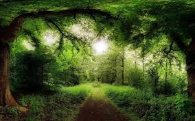

Львівська область відноситься до найбільш лісистих регіонів України. Ліси займають 31,8% її території, тоді як у середньому по Україні цей показник складає 15,7%, що майже удвічі менший. Ліси на Львівщині займають площу 694,6 тис. гектарів, що становить понад 8 % загальної площі лісів держави. Для порівняння: загальна територія області складає лише 3,6 % від території України.
